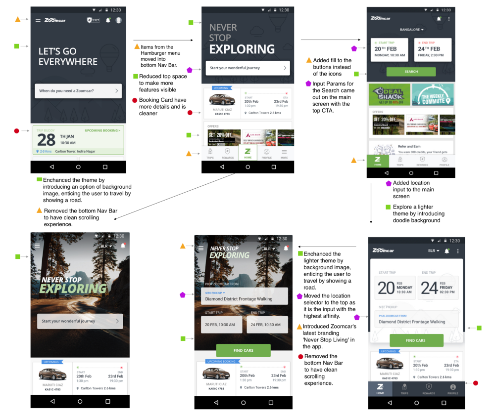

Design and Data-Driven Approach to App Revamp

36 experiments over 2 months and 3,500,000 data points to decide the best design for achieving the highest conversion rate, while increasing the visibility of side-products and features.
Problem Statement:
We wanted to increase the overall conversion rate, while not compromising on the visibility of less used products.
Introduce new features like current booking status — ‘TripBuddy’.
To make the design modular, to be able to absorb addition or removal of new product features.
Prototyping and Usability Testing
*After the prototyping and internal usability testing, we were left with two designs, which were radically opposite to each other.
*We called the first one as Parallel flow, this flow had all input parameters visible directly on the home screen. The user would be able to see all the input parameters that are needed to complete the task. This would succeed because users would be able to have zoomed-out visibility of the tasks that are needed to go to next step. Our hunch was that it would better for Repeat Users.
*Second one was the Series flow, this flow had all the input parameters placed one after each other. The user would be able to see only the input parameter that is needed to go the next step. We believed this would work as it reduces the cognitive load on the users by asking only the input that is needed to go to the next step. We thought it would better for First-time Users.
Analytics Setup
*We integrated ‘Segment’ as event tracking tool for both our Android and iOS app. Every screen and click was recorded and stored in database. Segment made it possible to make customer paths for each session on the App. Existing ‘Google Analytics’ integration didn’t provide us with this level of granularity.
*Success metric wasn’t limited to increase Searches, it extended to improve the final conversion on the App, which is creating a successful booking.
*We also measured the increase of discoverability for other feature changes: Offers module, Dealshack product, Commute product, Refer N Earn feature, Home Delivery and Airport flow.
A/B (/C) Testing

*To solve the conundrum, we resorted to macro data analysis rather than results from Usability testing through Prototyping. Although, prototyping was instrumental in narrowing to 2 designs from initial 15 designs.
*We designed a ‘SALT’ from the install time of the App, this way we were able to control the flow of users to different designs.
*There are 4 parameters that are needed to go to the Search screen: the service, pick-up location, start time, and end time. We were able to control entry of these input parameters. This enabled us to run 36 experiments together.
Results
*After 45 days and 2.5M sessions of testing, we found that both the flows combined (Parallel + Series) were ~15% better at conversion that the previous App design. However, we didn’t see a statistically significant difference between Parallel and Series. So we continued the experiment for an extra 15 days only between Parallel and Series flow.
*Finally after 15 days and 840K more sessions, Parallel flow turned out to be 10% better and achieved statistical significance over the Series flow.
*We converged all our users to Parallel flow. This was achieved without any further frontend or backend tech development, thanks to experiment module that we developed internally to perform the experimentation.
*There was a positive impact in other product features as well. The discoverability for Offers module increased by 10x, Airport flow saw an increase in searches by 2x. Unfortunately but not surprising, home delivery saw a decrease of 5% in conversion rate. This was expected because home delivery was present on the home screen before occupying the highest precedence when accounted to only 2% of the bookings. This was a trade-off, we expected and agreed to live with.
Tools Used
Design: Balsamiq - For Wire-framing; Sketch - For Graphic Designing; Marvel - For Prototyping; Zeplin - For Uploading the Exportables for Dev
Analytics: Segment - Event Tracking on the App; Amazon Redshift - For SQL queries on the database; https://www.optimizely.com/sample-size-calculator/ - For A/B Testing, simple tool for modifying the significance value of the experiment.
PS: I was the Product Manager for this App revamp project. I was directly involved in UX design (Graphic Design was handled by the in-house designer at Zoomcar), Analytics and leading the Product for Android and iOS App for Zoomcar. The current app has changed to accommodate introduction of new business lines: PEDL and Amp.